Citrix Provisioning Master Device - Convert to vDisk
Navigation
This article applies to all 7.x versions of Citrix Provisioning, including 2411, 2402 LTSR, and 2203 LTSR.
- Change Log
- PXE Tester
- Convert to vDisk - Imaging Wizard Method
- Join Device to Domain
- Boot from vDisk
- Save Clean Image
- KMS
- Seal the vDisk
- Defrag the vDisk
- Standard Image Mode
- vDisk High Availability
- Create Cache Disk - vSphere
- Create Cache Disk - Hyper-V
- Verify Write Cache Location
:idea: = Recently Updated
Change Log
- 2019 Jun 23 - KMS- new Accelerated Office Activation option in Provisioning 1906
- 2019 Jun 8 - vDisk HA - added link to Citrix Blog Post The vDisk Replicator Utility is finally finished!
- 2018 Sep 3 - renamed Provisioning Services to Citrix Provisioning
- 2018 June 9 - vDisk HA - added link to Citrix Blog Post vDisk Replicator Utility
- 2018 Jan 14 - in Defrag vDisk section, added note that ELM App Layering doesn't need defrag. Source = Gunther Anderson at Performance considarations? at Citrix Discussions
- 2017 Dec 14 - in Imaging Wizard > Boot from PVS section, added P2PVS.exe
PXE Tester
If you will use PXE, download CTX217122 PXEChecker to the master machine.
The TFTP portion won't work unless the client-side firewall is disabled.
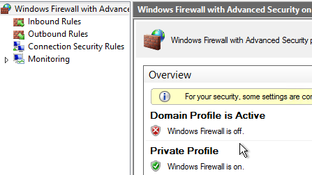
To verify functioning PXE, run PXEChecker, and Run Test in Legacy BIOS mode. Or you can do a BDM Test (see the article for details).
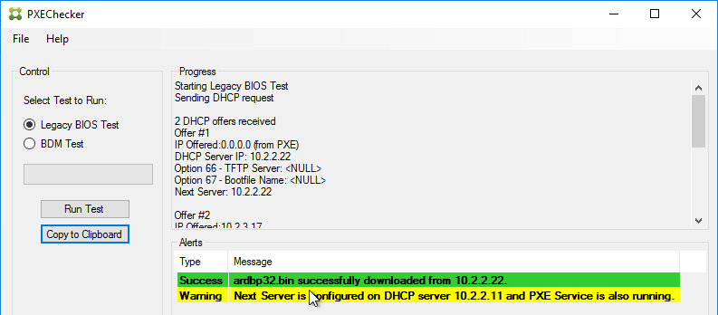
Convert to vDisk - Imaging Wizard Method
The Imaging Wizard connects to a Citrix Provisioning server to create a vDisk (.vhdx file) and a device (database entry with device's MAC address). Once that’s done, the machine reboots and the conversion process begins. You can also do all of these steps manually.
- In the Citrix Provisioning Console, create a Store to hold the new vDisk.
- In the Citrix Provisioning Console, create a Device Collection to hold the new Target Device. This could be a Device Collection for Updater machines.
- The Imaging Wizard will ask you to enter a new machine name. You can't use the existing machine name because Citrix Provisioning needs to create a new Active Directory account so Citrix Provisioning will know the new machine's computer password.
- If the Imaging Wizard is not already running, launch it from the Start Menu.
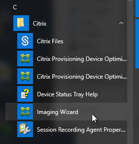
- In the Welcome to the Imaging Wizard page, click Next.
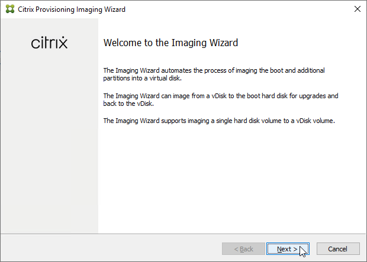
- In the Connect to Citrix Provisioning Site page, enter the name of a Citrix Provisioning server, and click Next.
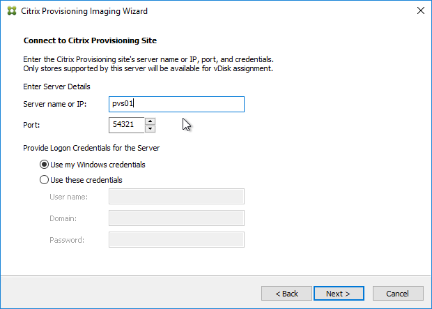
- In the Imaging Options page, click Next to create a new vDisk. Alternatively, you can select Create an image file.
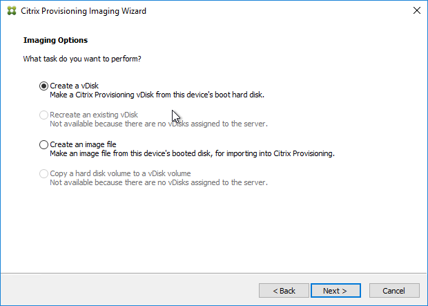
- In the Add Target Device page, enter a new unique name for the new Target Device.
- Select a Collection name and click Next.
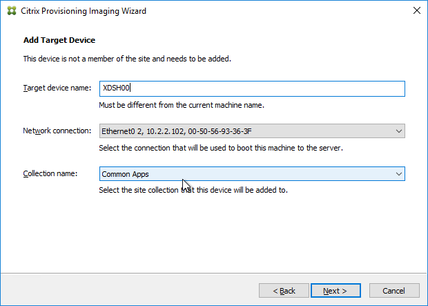
-
In the New vDisk page:
- Enter a name for the vDisk.
- Select an existing Store name.
- Leave vDisk type set to Dynamic and VHDX.
- Click Next
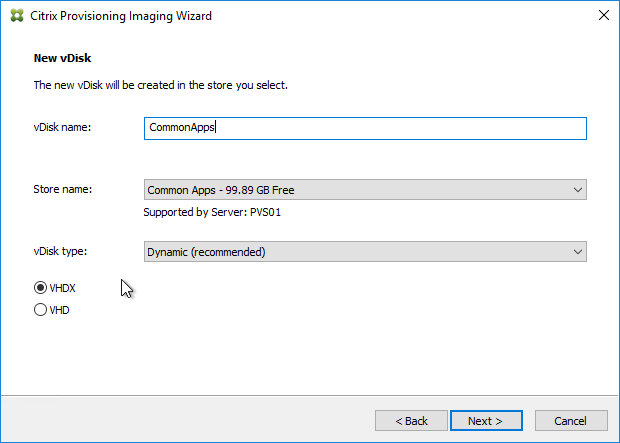
- In the Microsoft Volume Licensing page, select None, and click Next. We'll configure this later when switching to Standard Image mode.
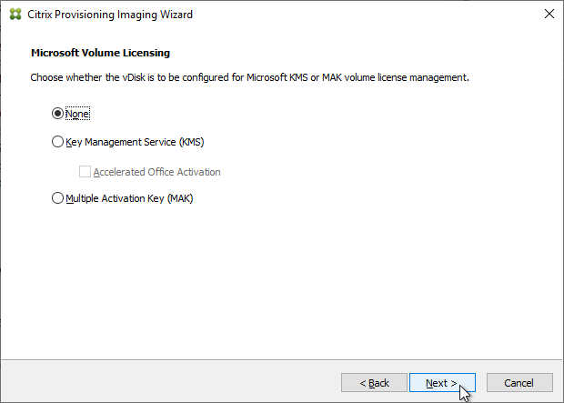
- In the What to Image page, leave it set to Image entire boot disk, and click Next.
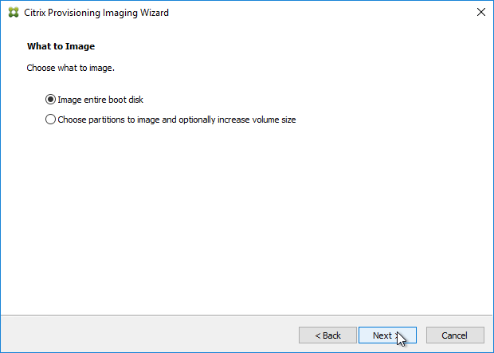
- In the Optimize Hard Disk for Citrix Provisioning page, click Next.
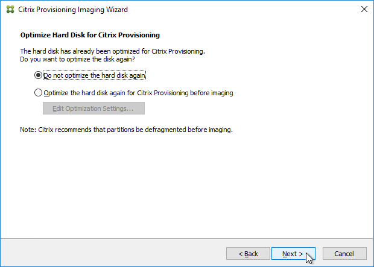
- Shown below are the optimizations it performs.
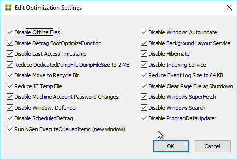
- In the Summary page, click Create.
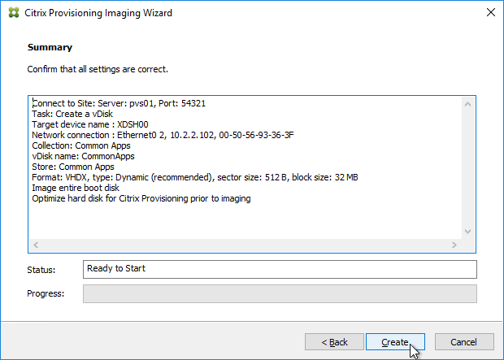
- In the Restart Needed page, click Continue.
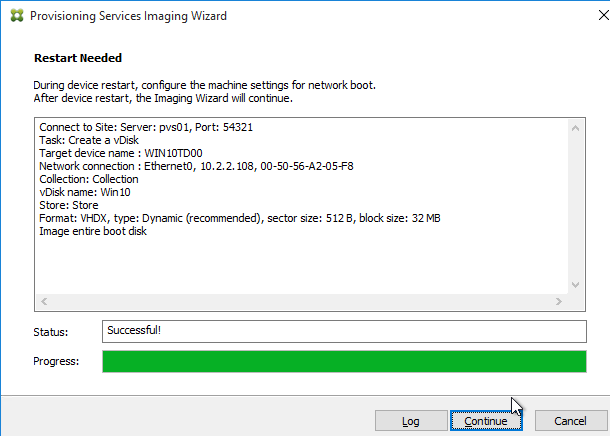
- When asked to reboot, click No.
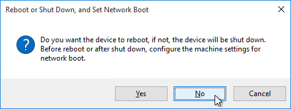
- Then click Yes to shut down the machine. This gives you time to reconfigure the machine to boot from the network or ISO. The vDisk conversion process cannot continue until you are booted from Citrix Provisioning.
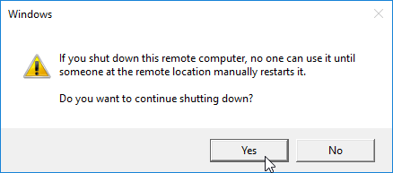
- If you look in the Citrix Provisioning console, in the Store, you will see a new vDisk in Private Image mode. Currently there is nothing in this vDisk. The new vDisk is sized the same as the machine you ran Imaging Wizard from. You might have to Refresh the display to see the new vDisk.
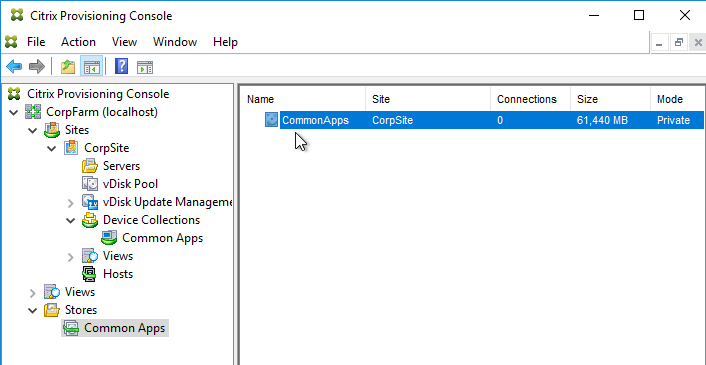
- In the chosen Device Collection, you will see a new Target Device record that is configured to boot from Hard Disk, and is assigned to the new vDisk. You might have to Refresh the display to see the new Device.
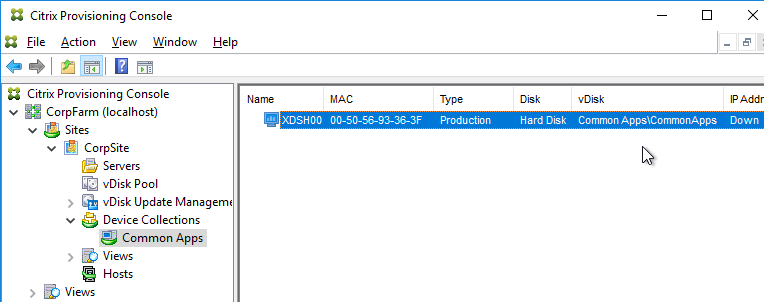
Boot from Network or ISO
- Power off the Target Device.
-
If the Target Devices are on the same subnet as the Provisioning Servers, then you don't need to configure DHCP Scope Options 66 or 67.
- EFI/UEFI devices require DHCP Scope Option 11 as described at CTX208519 Configuring PVS for High Availability with UEFI Booting and PXE service. DHCP Scope option 11 can have multiple PVS Server addresses.
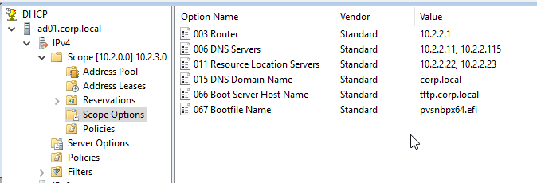
-
If the Target Devices are on a different subnet than the Provisioning Servers, then machines can use a Boot ISO that has UEFI enabled. Or configure DHCP Scope Options 66 and 67.
-
For DHCP Scope option 66, you can only configure one TFTP Server address. For HA, you can enter a DNS name that does DNS round robin to multiple Citrix Provisioning servers. Or use Citrix ADC to load balance the TFTP service on the PVS servers.
- Configure DHCP scope option 67 with the correct file name. For the EFI file name. See Unified Extensible Firmware Interface (UEFI) pre-boot environments at Citrix Docs.
- For vSphere Client, edit the settings of the virtual machine.
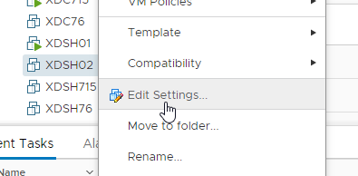
- Switch to the VM Options tab.
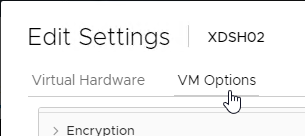
- In the Boot Options section, check the box to Force EFI Setup, or Force BIOS Setup.
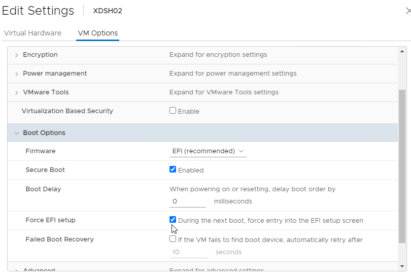
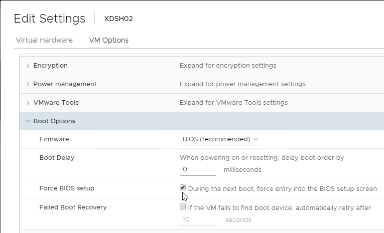
-
If vSphere, and booting from an ISO:
-
Switch to the Virtual Hardware tab.
- Expand CD/DVD drive 1 and connect the virtual machine’s CD to the Datastore ISO File named PvSBoot.iso.
- Make you check Connect At Power On.
- Make sure the CD-ROM is IDE, and not SATA.
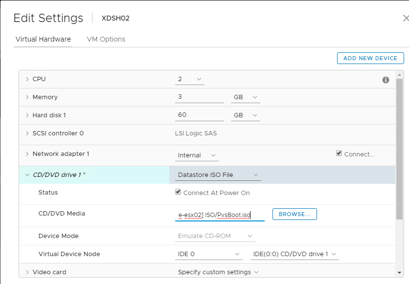
- Also, remove any SATA controller.
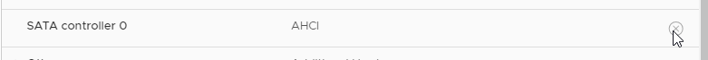
- Click OK to close the virtual machine settings.
-
If Hyper-V:
-
In VMM, edit the virtual machine properties
- Switch to the Hardware Configuration page.
- If booting from ISO, in the Virtual DVD drive page, assign the ISO from the library.
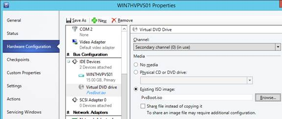
- Switch to the Hardware Configuration > Firmware page
- Move PXE Boot or IDE Hard Drive to the top.
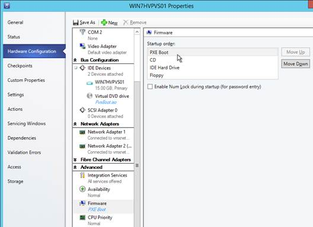
- Click OK to close the virtual machine properties.
- Power on the virtual machine.
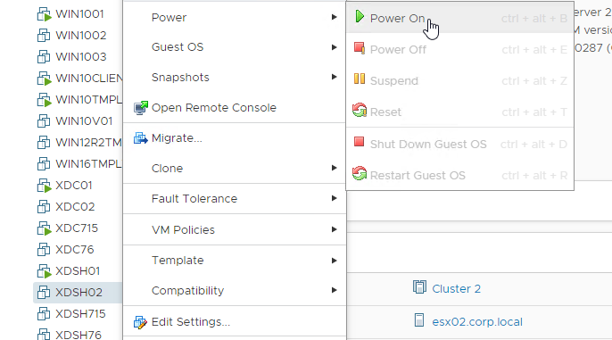
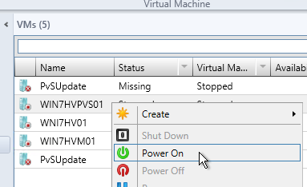
-
If vSphere EFI:
-
Boot the virtual machine.
- In the Boot Manager, don't select a boot option. Instead, go to Enter Setup.
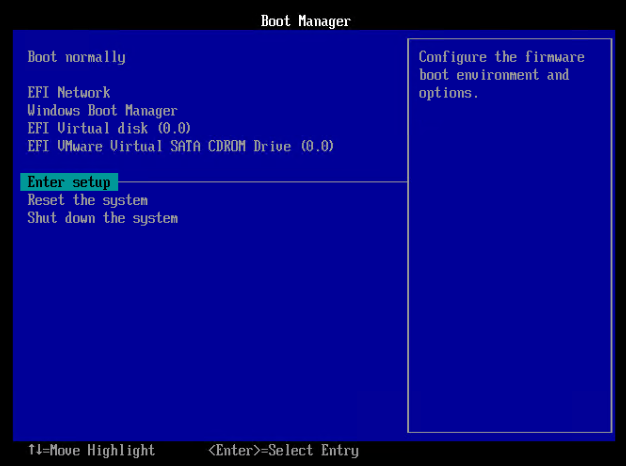
- Go to Configure boot options.
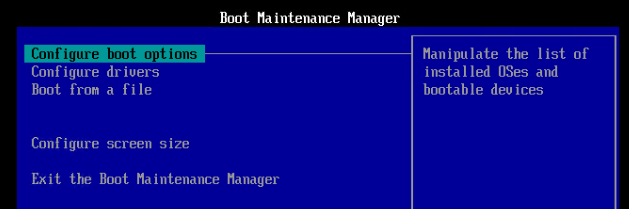
- Go to Change boot order.
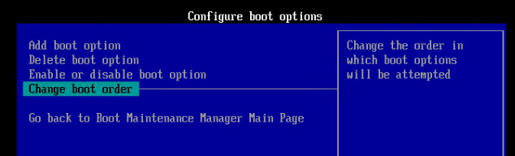
- Press
on Change the order.
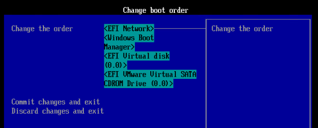
- Use the plus icon on your number pad to move EFI Network to the top.
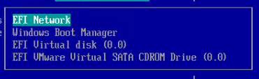
- Commit changes and exit.
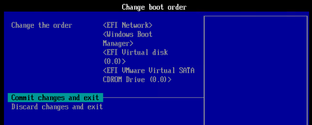
- Exit the Boot Maintenance Manager.
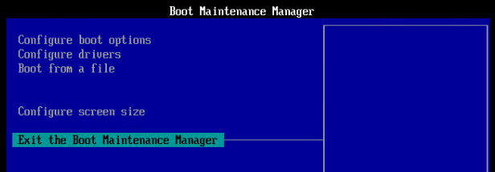
- Now boot from EFI Network.
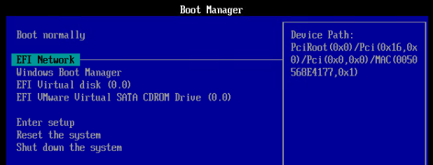
-
If vSphere BIOS:
-
Boot the virtual machine.
- In the Virtual Machine's console, on the Boot tab, move Network boot or CD-ROM Drive to the top.
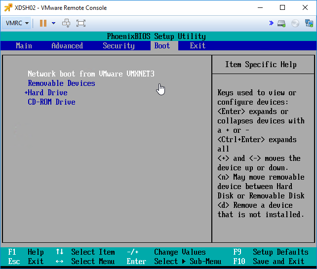
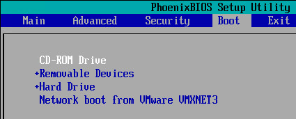
- Press F10 to close the BIOS Setup Utility.
- You should see the virtual machine boot from a Citrix Provisioning server and find the vDisk.
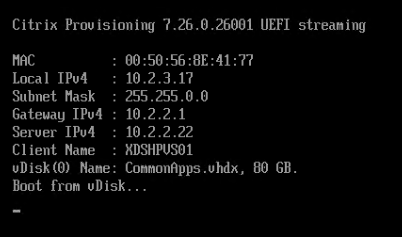
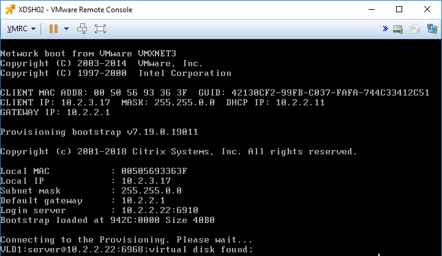
- Once the machine has booted, login. If you see a Format Disk message, just ignore it, or click Cancel. The Imaging Wizard will format it for you.
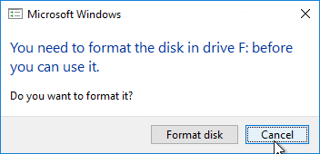
- The conversion wizard will commence. It will take several minutes to copy the files from C: drive (local hypervisor disk) to vDisk (Citrix Provisioning disk) so be patient.
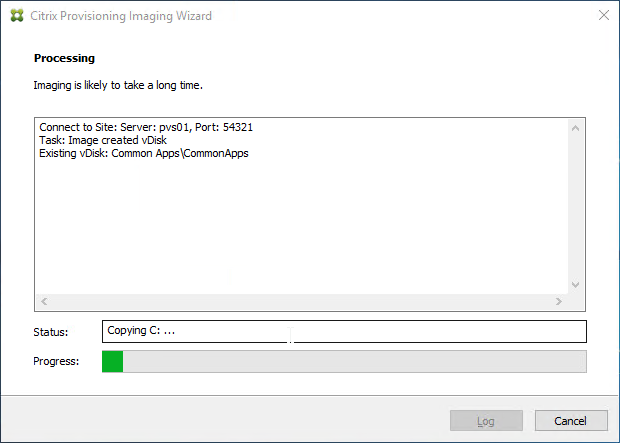
- If the Imaging Wizard does not successfully copy the local drives to the vDisk, first make sure the vDisk is mounted by opening the systray icon.
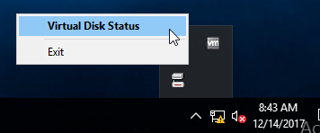
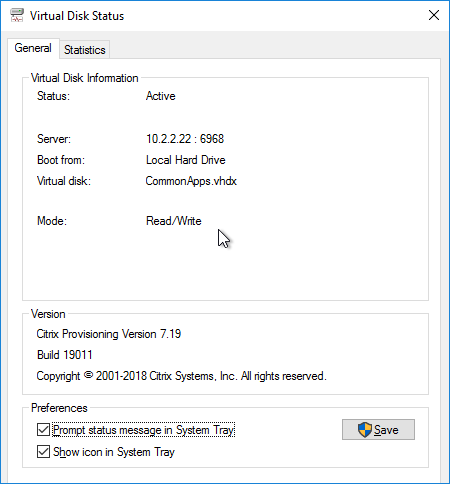
- Then you can manually start the conversion by running C:\Program Files\Citrix\Provisioning Services\P2PVS.exe.
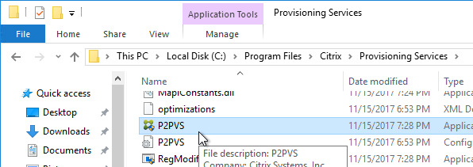
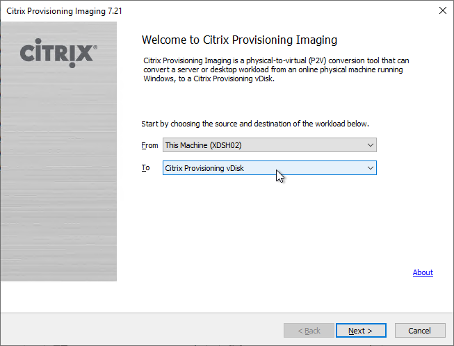
- When done, click Done. It might prompt you to reboot. Reboot it, log in, and then shut it down.
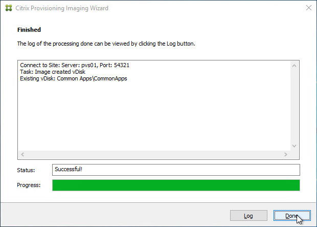
- EFI/UEFI devices require DHCP Scope Option 11 as described at CTX208519 Configuring PVS for High Availability with UEFI Booting and PXE service. DHCP Scope option 11 can have multiple PVS Server addresses.
Master Target Device – Join to Domain
Citrix Provisioning must learn the password of the Target Device’s Active Directory computer account. To achieve this, use the Citrix Provisioning Console to create or reset the computer account.
Do not use Active Directory Users & Computers to manage the Target Device computer account passwords. Creating, Resetting, and Deleting Target Device Active Directory computer objects must be done from inside the Citrix Provisioning Console so Citrix Provisioning will know the computer's password. Citrix Provisioning will automatically handle periodic (default 7 days) changing of the computer passwords.
- In the Citrix Provisioning Console, right-click the new Target Device, expand Active Directory, and click Create Machine Account.
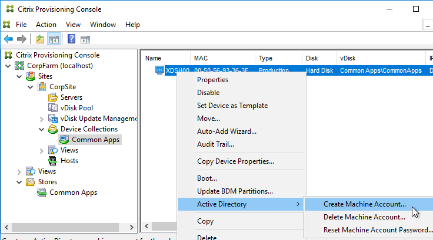
- Select the correct OU in which the Active Directory computer object will be placed, and click Create Account.
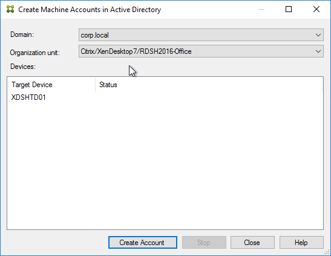
- Then click Close.
Boot from vDisk
- In the Citrix Provisioning Console, go to the Device Collection.
- Right-click the new device, and click Properties.
- On the General tab, set Boot from to vDisk.
- Restart the Target Device.
- At this point it should be booting from the vDisk. To confirm, in the systray by your clock is an icon that looks like a disk. Double-click it.
- The General tab shows it Boot from = vDisk, and the Mode = Read/Write.
vDisk – Save Clean Image
If you have not yet installed applications on this image, you can copy the VHDX file and keep it as a clean base image for future vDisks.
- If this vDisk is in Private Image mode, first power off any Target Devices that are accessing it.
- Then you can simply copy the VHDX file and store it in a different location.
If you later need to create a new vDisk, here's how to start from the clean base image:
- Copy the clean base image VHDX file to a new folder.
- Rename the file to match your new Image name.
- In the Citrix Provisioning Console, create a new Store, and point it to the new folder.
- Give the new Store a name.
- On the Servers tab, select all Provisioning servers.
- On the Paths tab, enter the path to the new folder. Click OK.
- Click OK when asked to create the default write cache.
- Right-click the new store and click Add or Import Existing vDisk.
- Click Search.
- Click OK if prompted that a new property file will be created with default values.
- Click Add, click OK, and then click Close.
- You can now assign the new vDisk to an Updater Target Device and install applications.
KMS
Skip this section if you are using Active Directory-based Activation instead of KMS Server.
This only needs to be done once. More information at CTX128276 Configuring KMS Licensing for Windows and Office.
- Make sure the Citrix Provisioning services are running as an account that is a local administrator on the Provisioning Servers. Citrix Provisioning needs to mount the vDisk but only local administrators can mount VHDX files.
- In the Citrix Provisioning Console, right-click on the virtual disk, and select Properties.
- Click on the tab named Microsoft Volume Licensing, and set the licensing option to None. Click OK.
- Boot an Updater device from the vDisk in Private Image mode.
-
Login to Windows and rearm the system for both Windows and Office, one after the other.
- For Windows Vista, 7, 2008, and 2008R2: Run cscript.exe slmgr.vbs -rearm
- For Office (for 64-bit client): C:\Program Files(x86)\Common Files\Microsoft shared\OfficeSoftwareProtectionPlatform\OSPPREARM.EXE
- For Office (for 32-bit client): C:\Program Files\Common Files\Microsoft shared\OfficeSoftwareProtectionPlatform\OSPPREARM.EXE
- A message is displayed to reboot the system, DO NOT REBOOT- Instead, run sealing tasks and then shut down the Target Device.
- In the Citrix Provisioning Console, right-click on the virtual disk, and select Properties.
-
Click on the tab named Microsoft Volume Licensing, and set the licensing option to Key Management Services (KMS).
-
In Citrix Provisioning 1906 and newer, also check the box next to Accelerated Office Activation.
- Click OK.
Note: After streaming the vDisk to multiple Target Devices, Administrators can validate that the KMS configuration was successful by verifying that the CMID for each device is unique.
- For Windows: Run cscript.exe slmgr.vbs –dlv
- For Office: Run C:\Program Files\Microsoft Office\Office16\cscript ospp.vbs /dcmid
Also see Citrix Blog Post Demystifying KMS and Provisioning Services
vDisk – Seal
Do the following sealing steps every time you switch from Private Image mode to Standard Image mode, or promote a Maintenance Image to Test or Production.
- Run antivirus sealing tasks. See VDA > Antivirus for links to various antivirus vendor articles.
- Citrix Blog Post Sealing Steps After Updating a vDisk contains a list of commands to seal an image for Citrix Provisioning.
- Citrix Blog Post PVS Target Devices & the “Blue Screen of Death!” Rest Easy. We Can Fix That has a reg file to clear out DHCP configuration.
- Shut down the target device.
- Note: Base Image Script Framework (BIS-F) automates many sealing tasks. The script is configurable using Group Policy.


Defrag the vDisk
In the Citrix Blog Post Size Matters: PVS RAM Cache Overflow Sizing, Citrix recommends defragmenting the vDisk.
If the vDisk was created by App Layering ELM, then Gunther Anderson at Performance considarations? at Citrix Discussions says there's no point in doing a defrag.
- While still in Private Image mode, right-click the vDisk, and click Mount vDisk.
- In File Explorer, find the mounted disk, right-click it, and click Properties.
- On the Tools tab, click Optimize.
- Highlight the mounted drive and click Optimize.
- When done, back in Citrix Provisioning Console, right-click the vDisk, and click Unmount vDisk.
Standard Image Mode
- In the Citrix Provisioning Console, go to the vDisk store, right-click the vDisk, and click Properties.
-
On the General tab:
- Change the Access Mode to Standard Image.
- Set the Cache Type to Cache in device RAM with overflow on hard disk. Don’t leave it set to the default cache type or you will have performance problems. Also, every time you change the vDisk from Standard Image to Private Image and back again, you’ll have to select Cache in device RAM with overflow on hard disk.
- Change the Maximum RAM size to a higher value. For virtual desktops, set it to 512 MB or larger. For Remote Desktop Session Hosts, set it to 4096 MB or lager. Make sure your Target Devices have extra RAM to accommodate the write cache.
- On the bottom of the General tab is a new checkbox to disable cleanup of cached secrets. By default, Citrix Provisioning 7.12 and newer will delete any cached credentials. This behavior can be disabled by checking the box.
- Click OK when done.
vDisk – High Availability
- In the Citrix Provisioning Console, right-click the vDisk, and click Load Balancing.
- Ensure Use the load balancing algorithm is selected. Check the box next to Rebalance Enabled. Click OK.
- Go to the physical vDisk store location (e.g. D:\Win2016Common) and copy the .vhd and .pvp vDisk files for the new vDisk. Do not copy the .lok file.
- Go to the same path on the other Provisioning Server and paste the files. You must keep both Provisioning Servers synchronized.
-
Another method of copying the vDisk files is by using Robocopy:
-
Citrix Blog Post The vDisk Replicator Utility is finally finished! has a GUI utility script that can replicate vDisks between Citrix Provisioning Sites and between Citrix Provisioning Farms.
- In the Citrix Provisioning Console, right-click the vDisk, and click Replication Status.
- Blue indicates that the vDisk is identical on all servers. If they’re not identical then you probably need to restart the Citrix PVS Stream Service and the Citrix PVS SOAP Service. Click Done when done.
Cache Disk – vSphere
Here are vSphere instructions to remove the original C: drive from the Master Target Device, and instead add a blank cache disk.
- In vSphere Client, right-click the Master Target Device, and click Edit Settings.
- Select Hard disk 1, and click the x icon. Click OK.
- Edit the Settings of the virtual machine again.
- On the top right, click Add New device, and select Hard Disk.
-
This is your cache overflow disk. Size is based on the type of VDA.
- 40 GB is probably a good size for session hosts.
- For virtual desktops this can be a smaller disk (e.g. 5 GB).
- Note: the pagefile must be smaller than the cache disk.
- Expand the newly added disk, and set Disk Provisioning to Thin provision if desired. Click OK when done.

- Configure group policy to place the Event Logs on the cache disk.
- Boot the Target Device and Verify the Write Cache Location.
Cache Disk – Hyper-V
Remove the original C: drive from the Target Device and instead add a cache disk.
- Edit the settings of your Citrix Provisioning master virtual machine and remove the existing VHD.
- Make a choice regarding deletion of the file.
- Create a new Disk.
- This is your cache overflow disk. 15-20 GB is probably a good size for session hosts. For virtual desktops this can be a smaller disk (e.g. 5 GB). Note: the pagefile must be smaller than the cache disk. Click OK when done.
- Configure group policy to place the Event Logs on the cache disk.
Verify Write Cache Location
- Boot the target device virtual machine.
- Open the Virtual Disk Status window by clicking the Citrix Provisioning disk icon in the system tray by the clock.
- Make sure Mode is set to Read Only and Cache type is set to device RAM with overflow on local hard drive.
- If Cache type says server, then follow the next steps:
- For the cache disk, if machine uses BIOS, then only MBR is supported. GPT only works with EFI/UEFI machines.
- The cache disk must be a Basic disk, not Dynamic.
- Format the cache disk with NTFS.
- Make sure the pagefile is smaller than the cache disk. If not it will fail back to server caching.
- After fixing the problem and rebooting, the Cache Type should be device RAM with overflow on local hard drive.
- To view the files on the cache disk, go to Folder Options, and deselect Hide protected operating system files.
- On the cache disk, you’ll see the pagefile, and the vdiskdiff.vhdx file, which is the overflow cache file.